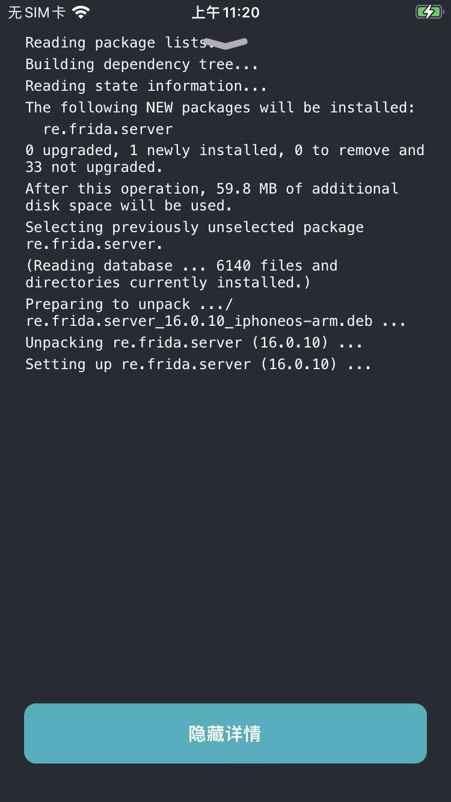
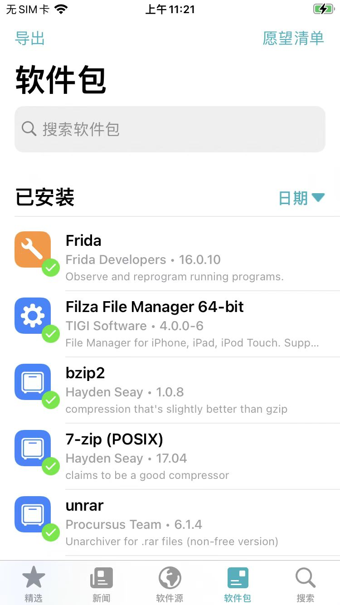

通过软件源安装Frida插件
- 已知：Frida的软件源是 https://build.frida.re
现在去Sileo中，通过添加软件源 https://build.frida.re 的方式，去安装Frida插件：
点击加号➕新增软件源
有两种方式：
- 复制后粘贴软件源地址
- 手动输入软件源地址
复制后粘贴软件源地址
通过系统剪贴板，已复制了： https://build.frida.re
再去先切换到Sileo中的软件源 ，点击右上角的➕=加号，则会自动检测出并弹框：
添加软件源 的弹框：
点击 添加1个软件源
手动输入软件源地址
或者是，点击加号+后，出现，可供输入软件源地址的弹框中，手动输入输入软件源地址：
再点击 添加软件源
进入插件详情页
然后，稍等片刻，即可看到更新好后的（带图标的、显示插件总个数的）软件源：
点击软件源，此处的Frida，进入插件列表页面：
找到对应的插件：此处可以看到Frida插件，点击后，可以进去：
Frida插件详情页
点击安装插件
点击对应的获取，此时会看到页面底部出现一个队列：
且原先获取按钮，也变成了队列按钮 -》 表示该插件已经加入到了，待安装的列表中
点击底部的队列，可以展开看到详情：
点击确认，即可开始下载插件：
并安装插件：
查看安装详情过程
下载和安装完成后，会显示：显示详情，点击显示详情，会打开安装过程的详情页：

即可安装完毕。
查看已安装的插件
而如果切换到Sileo主页，切换到tab页软件包，根据日期=时间先后排序，则可以在已安装插件列表中看到刚安装的Frida插件：
